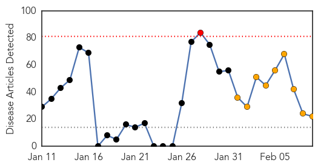
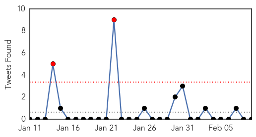
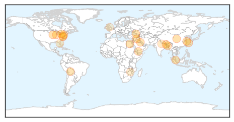

30 Day Trends
Web: 1 alerts, 9 warnings
Twitter: 2 alerts, 0 warnings
Top Articles:
- 0.942
- H7N9 vaccine development progresses - Headlines, features, photo and videos from ecns.cn
- 0.940
- Merck, Utrecht University to research pig virus vaccine
- 0.934
- Nipah virus still a ‘concern’
- 0.917
- Chicago Tribune
- 0.917
- Chicago Tribune
- 0.917
- Chicago Tribune
- 0.917
- Chicago Tribune
- 0.917
- Chicago Tribune
- 0.917
- Chicago Tribune
- 0.917
- Chicago Tribune
- 0.917
- Chicago Tribune
- 0.917
- Chicago Tribune
- 0.866
- Estela Parada cares for her newborn baby who was born overnight during a heavy storm, in the flooded Villa Marin quarter, on the outskirts of Trinidad in the Beni department
- 0.866
- Syria says 500 civilians evacuated from central Homs
- 0.866
- At least 3 hurt in bomb blast near Yemen's oil ministry
- 0.866
- A woman cries after she lost all of her belongings in a fire at a slum at Modhubagh in Dhaka
- 0.835
- Oakville hospital battles scabies outbreak
- 0.806
- Student diagnosed with TB in Montgomery County
- 0.654
- Indian village famous for saris now known for TB
- 0.622
- Florida Hospital Memorial Medical Center to pre-screen ER patients
- 0.564
- Zimbabwe's maternal mortality crisis
- 0.508
- UK/Europe: Action urged on swine fever spread
Top Tweets:
-
No tweets found for Feb 09, 2014
Web/News Articles
Tweets
Article Locations
Article Confidences